1 Overview of moiraine
In this chapter, we provide an overview of the capabilities of moiraine. Some code is presented for illustration, but for more details readers will be directed towards the corresponding chapter in the manual.
1.1 Input data
The first step is to import the omics datasets and associated information into R. For each omics dataset, the moiraine package expects three pieces of information, which are read from csv files (or other specific formats when possible such as gtf or gff3):
the measurements of omics features across the samples (the dataset)
information about the omics features measured (the features metadata)
information about the samples measured (the samples metadata)
An example of input files is shown below:
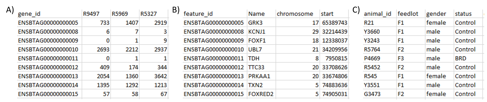
moiraine (first 10 rows and 4 columns only): A) RNAseq read counts across genes (rows) and samples (columns). B) Table of features metadata, providing information about the genes measured. c) Table of samples metadata, i.e. information about the animals that were observed.moiraine uses the MultiDataSet package to store the omics datasets and associated metadata into a single R object, which can be used as input for the different moiraine functions (see Chapter 3 for details about data import). This ensures that these functions can be used regardless of the number or type of omics datasets to analyse. At any point, the datasets, features and samples metadata can easily be extracted from the MultiDataSet object through get_datasets(), get_features_metadata() and get_samples_metadata().
Here is an example of a MultiDataSet object:
#> Object of class 'MultiDataSet'
#> . assayData: 3 elements
#> . snps: 23036 features, 139 samples
#> . rnaseq: 20335 features, 143 samples
#> . metabolome: 55 features, 139 samples
#> . featureData:
#> . snps: 23036 rows, 13 cols (feature_id, ..., p_value)
#> . rnaseq: 20335 rows, 15 cols (feature_id, ..., de_signif)
#> . metabolome: 55 rows, 16 cols (feature_id, ..., de_signif)
#> . rowRanges:
#> . snps: YES
#> . rnaseq: YES
#> . metabolome: NO
#> . phenoData:
#> . snps: 139 samples, 10 cols (id, ..., geno_comp_3)
#> . rnaseq: 143 samples, 10 cols (id, ..., geno_comp_3)
#> . metabolome: 139 samples, 10 cols (id, ..., geno_comp_3)Importantly, this means that all the information that we have about the omics features and samples are available to moiraine for customising plots or outputs. For example, it is possible to quickly generate a heatmap displaying the measurements for specific features of interest, and add information about the features and samples to facilitate the interpretation of the plot:
Code
head(interesting_features) ## vector of feature IDs
#> [1] "ARS-BFGL-NGS-27468" "BovineHD2300010006" "BovineHD0300000351"
#> [4] "BovineHD1900011146" "BovineHD0900026231" "ENSBTAG00000022715"
colours_list <- list(
"status" = c("Control" = "gold", "BRD" = "lightblue"),
"day_on_feed" = colorRamp2(c(5, 70), c("white", "pink3")),
"de_status" = c("downregulated" = "deepskyblue",
"upregulated" = "chartreuse3")
)
plot_data_heatmap(
mo_set, # the MultiDataSet object
interesting_features, # vector of feature IDs of interest
center = TRUE, # centering and scaling data for
scale = TRUE, # easier visualisation
show_column_names = FALSE, # hide sample IDs
only_common_samples = TRUE, # only samples present in all omics
samples_info = c("status", "day_on_feed"), # add info about samples
features_info = c("de_status"), # add info about features
colours_list = colours_list, # customise colours
label_cols = list( # specify features label
"rnaseq" = "Name", # from features metadata
"metabolome" = "name"
)
)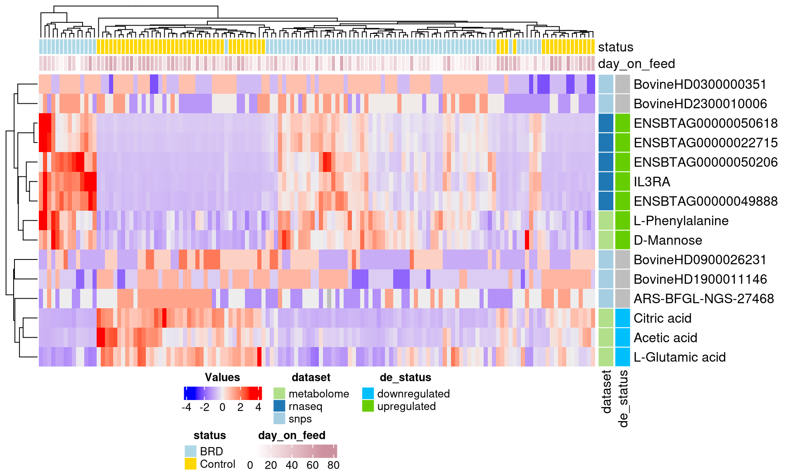
Similarly, a number of functions allow to quickly summarise different aspects of the multi-omics dataset, such as creating an upset plot to compare the samples present in each omics dataset (plot_samples_upset()), or generating a density plot for each omics dataset (plot_density_data()). See Chapter 4 for more details about the different visualisations and summary functions implemented.
1.2 Data pre-processing
Target factories have been implemented to facilitate the application of similar tasks across the different omics datasets. For example, the transformation_datasets_factory() function generates a sequence of targets to apply one of many possible transformations (from the vsn, DESeq2, or bestNormalize packages, for example) on each omics dataset, store information about each transformation performed, and generate a new MultiDataSet object in which the omics measurements have been transformed:
Code
transformation_datasets_factory(
mo_set, # MultiDataSet object
c("rnaseq" = "vst-deseq2", # VST through DESeq2 for RNAseq
"metabolome" = "logx"), # log2-transf. for NMR dataset
log_bases = 2, # Base for log transformation
pre_log_functions = zero_to_half_min, # Handling 0s in log2-transf.
transformed_data_name = "mo_set_transformed" # New MultiDataSet object
)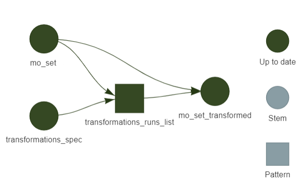
Note that there is also the option for users to apply their own custom transformations to the datasets (see Chapter 5).
Similarly, the pca_complete_data_factory generates a list of targets to run a PCA on each omics dataset via the pcaMethods package, and if necessary imputes missing values through NIPALS-PCA. The PCA results can be easily visualised for all or specific omics datasets:
Code
plot_screeplot_pca(pca_runs_list)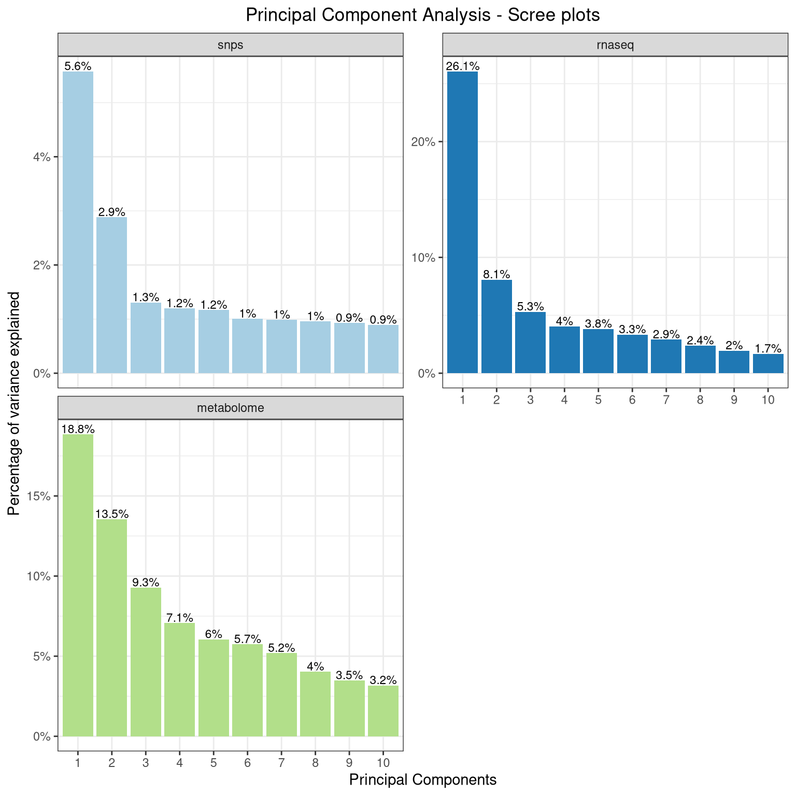
Code
plot_samples_coordinates_pca(
pca_runs_list, # List of PCA results
datasets = "snps", # Dataset to plot
pcs = 1:3, # Principal components to display
mo_data = mo_set, # MultiDataSet object
colour_upper = "geno_comp_cluster", # Samples covariate
shape_upper = "status", # Samples covariate
colour_lower = "feedlot", # Samples covariate
scale_colour_lower = scale_colour_brewer(palette = "Set1") # Custom palette
) +
theme(legend.box = "vertical") # Plot legend vertically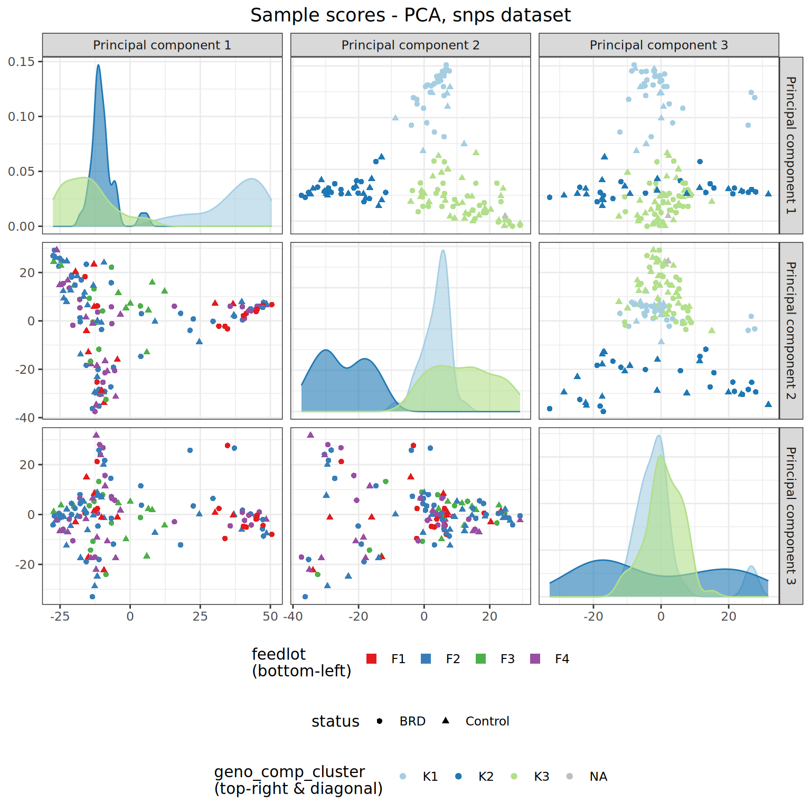
More information about data pre-processing can be found in Chapter 6.
1.3 Data pre-filtering
The created MultiDataSet object can be filtered, both in terms of samples and features, by passing a list of sample or feature IDs to retain, or by using logical tests on samples or features metadata. In addition, we implement target factories to retain only the most variable features in each omics dataset –unsupervised filtering–, or to retain the features most associated with an outcome of interest, via sPLS-DA from mixOmics –supervised filtering– (see Chapter 7). This pre-filtering step is essential to reduce the size of the datasets prior to multi-omics integration.
Code
feature_preselection_splsda_factory(
mo_set_complete, # A MultiDataSet object
group = "status", # Sample covariate to use for supervised filtering
to_keep_ns = c( # Number of features to retain per dataset
"snps" = 1000,
"rnaseq" = 1000
),
filtered_set_target_name = "mo_presel_supervised" # Name of filtered object
)#> Object of class 'MultiDataSet'
#> . assayData: 3 elements
#> . snps: 1000 features, 139 samples
#> . rnaseq: 994 features, 143 samples
#> . metabolome: 55 features, 139 samples
#> . featureData:
#> . snps: 1000 rows, 13 cols (feature_id, ..., p_value)
#> . rnaseq: 994 rows, 15 cols (feature_id, ..., de_signif)
#> . metabolome: 55 rows, 16 cols (feature_id, ..., de_signif)
#> . rowRanges:
#> . snps: YES
#> . rnaseq: YES
#> . metabolome: NO
#> . phenoData:
#> . snps: 139 samples, 10 cols (id, ..., geno_comp_3)
#> . rnaseq: 143 samples, 10 cols (id, ..., geno_comp_3)
#> . metabolome: 139 samples, 10 cols (id, ..., geno_comp_3)1.4 Multi-omics data integration
Currently, moiraine provides functions and target factories to facilitate the use of five integration methods: sPLS and DIABLO from the mixOmics package, sO2PLS from OmicsPLS, as well as MOFA and MEFISTO from MOFA2.
This includes functions that transform a MultiDataSet object into the required input format for each integration method; for example for sPLS (only top of the matrices shown):
Code
get_input_spls(
mo_presel_supervised,
mode = "canonical",
datasets = c("rnaseq", "metabolome")
)#> $rnaseq
#> ENSBTAG00000000020 ENSBTAG00000000046 ENSBTAG00000000056
#> R9497 3.486141 7.211634 10.25302
#> R5969 3.486141 7.436865 10.45008
#> R5327 4.005139 6.731310 10.72323
#> R5979 3.486141 7.538956 10.46189
#> R9504 4.252314 7.493829 10.20723
#> ENSBTAG00000000061 ENSBTAG00000000113
#> R9497 5.028442 13.49233
#> R5969 4.285078 12.95106
#> R5327 5.313842 13.14427
#> R5979 4.333030 12.55548
#> R9504 4.784574 12.71693
#>
#> $metabolome
#> HMDB00001 HMDB00008 HMDB00042 HMDB00043 HMDB00060
#> R9497 3.397217 3.405992 9.654099 7.559186 0.5849625
#> R5969 3.318827 2.137504 7.639522 6.539159 2.5849625
#> R5327 3.721137 6.270529 6.963474 6.024586 2.6322682
#> R5979 3.326626 2.232661 8.401306 7.394891 2.5849625
#> R9504 3.603548 5.675251 7.879583 7.669594 0.8479969moiraine also offers helper functions and target factories to facilitate the application of these integration tools. For example, the diablo_predefined_design_matrix() function generates, for a given DIABLO input object, one of the three recommended design matrices for DIABLO (null, full or weighted full), while the diablo_pairwise_pls_factory() factory creates a list of targets to estimate the optimal design matrix to use for DIABLO based on datasets pairwise correlations estimated using PLS:
Code
list(
tar_target(
diablo_input, # DIABLO input object
get_input_mixomics_supervised(
mo_presel_supervised, # MultiDataSet object (prefiltered)
group = "status" # Samples covariate of interest
)
),
diablo_pairwise_pls_factory(diablo_input) # Target factory for design matrix
# estimation
)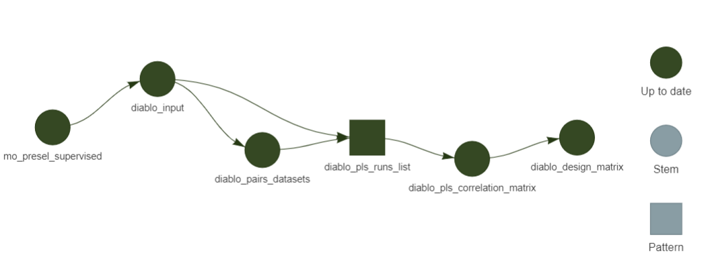
In addition, a number of plotting functions have been implemented e.g. to visualise different aspects of the integration process: e.g. diablo_plot_tune() to show the results of model tuning in DIABLO or so2pls_plot_summary() (shown below) to display the percentage of variance explained by each latent component constructed by sO2PLS:
Code
so2pls_plot_summary(so2pls_final_run)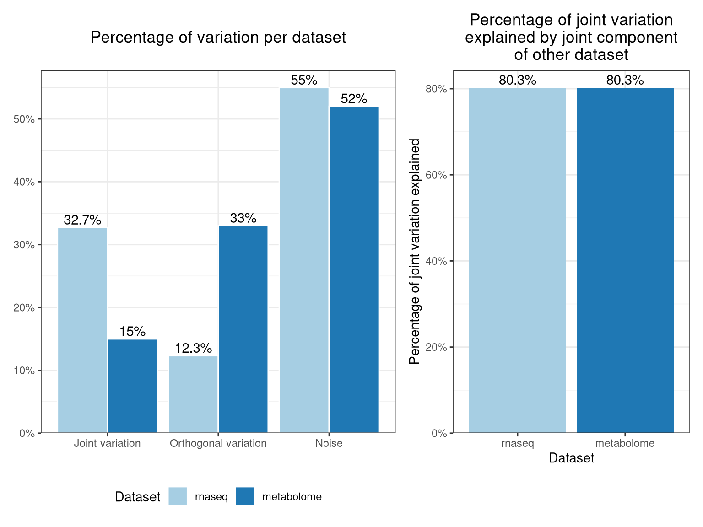
Wouldn’t it be nice to have informative labels for the features in DIABLO’s circos plots? With moiraine, it is possible to use information from the features metadata provided as labels for the features in the plots. So, we can go from:
Code
mixOmics::circosPlot(
diablo_final_run,
cutoff = 0.7,
size.variables = 0.5,
comp = 1
)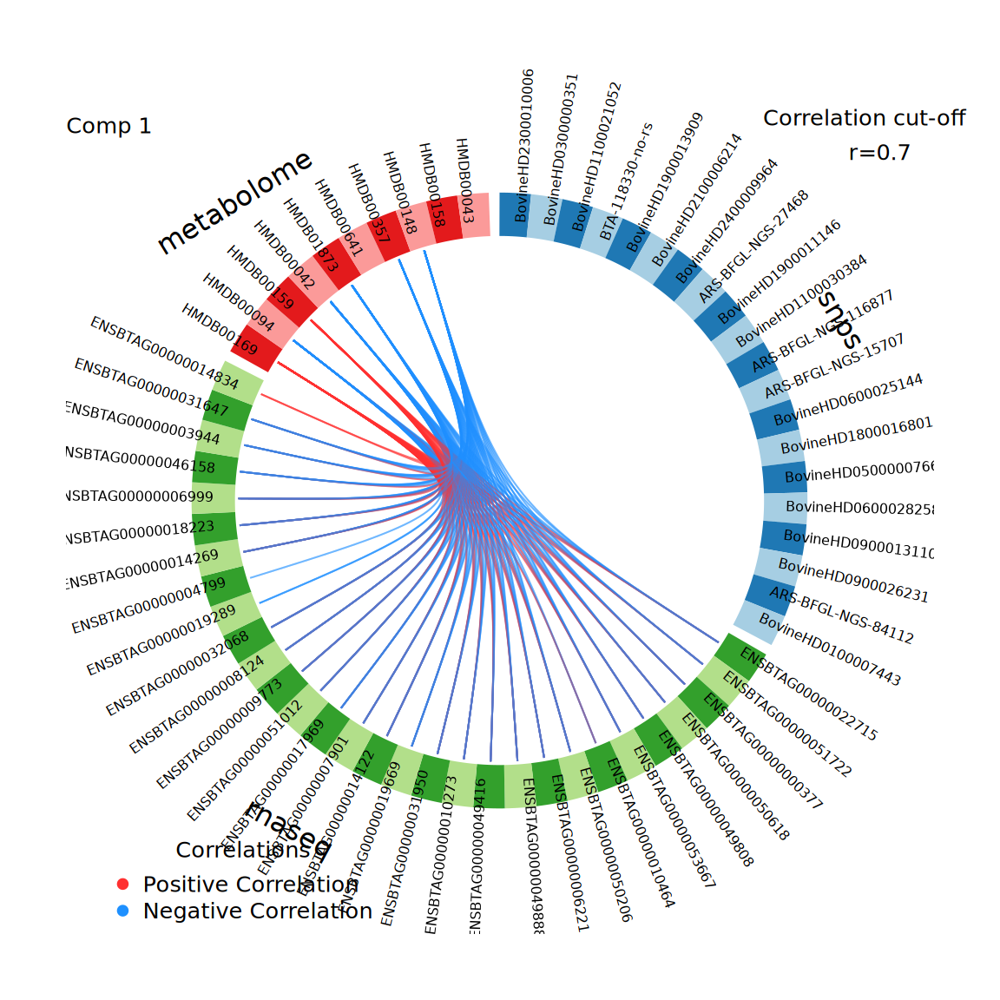
to:
Code
diablo_plot_circos(
diablo_final_run,
mo_set,
label_cols = list(
"rnaseq" = "Name",
"metabolome" = "name"
),
cutoff = 0.7,
size.variables = 0.5,
comp = 1
)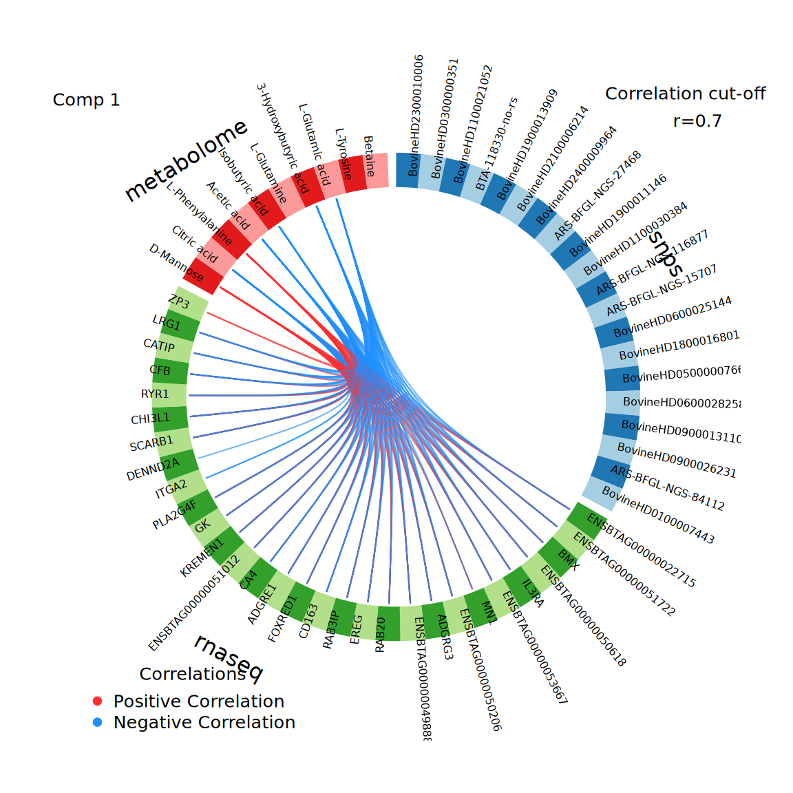
More details about how to use these integration tools through moiraine can be found in Chapters 8 to 11.
1.5 Interpreting the integration results
One of the main goals of moiraine is to facilitate the interpretation of the omics integration results. To this end, the outcome of any of the supported integration methods can be converted to a standardised integration output format, e.g.:
Code
get_output(mofa_trained)#> $features_weight
#> # A tibble: 8,196 × 5
#> feature_id dataset latent_dimension weight importance
#> <chr> <fct> <fct> <dbl> <dbl>
#> 1 21-25977541-C-T-rs41974686 snps Factor 1 0.000374 0.139
#> 2 22-51403583-A-C-rs210306176 snps Factor 1 0.0000535 0.0199
#> 3 24-12959068-G-T-rs381471286 snps Factor 1 0.000268 0.0999
#> 4 8-85224224-T-C-rs43565287 snps Factor 1 -0.000492 0.183
#> 5 ARS-BFGL-BAC-16973 snps Factor 1 -0.000883 0.329
#> 6 ARS-BFGL-BAC-19403 snps Factor 1 -0.000500 0.186
#> 7 ARS-BFGL-BAC-2450 snps Factor 1 0.000555 0.207
#> 8 ARS-BFGL-BAC-2600 snps Factor 1 -0.0000325 0.0121
#> 9 ARS-BFGL-BAC-27911 snps Factor 1 -0.000568 0.212
#> 10 ARS-BFGL-BAC-35925 snps Factor 1 0.000803 0.299
#> # ℹ 8,186 more rows
#>
#> $samples_score
#> # A tibble: 576 × 3
#> sample_id latent_dimension score
#> <chr> <fct> <dbl>
#> 1 G1979 Factor 1 1.95
#> 2 G2500 Factor 1 1.98
#> 3 G3030 Factor 1 3.39
#> 4 G3068 Factor 1 3.65
#> 5 G3121 Factor 1 1.57
#> 6 G3315 Factor 1 -1.81
#> 7 G3473 Factor 1 -2.63
#> 8 G3474 Factor 1 -2.30
#> 9 G3550 Factor 1 2.98
#> 10 G3594 Factor 1 -1.88
#> # ℹ 566 more rows
#>
#> $variance_explained
#> # A tibble: 12 × 3
#> latent_dimension dataset prop_var_expl
#> <fct> <fct> <dbl>
#> 1 Factor 1 snps 0.000313
#> 2 Factor 1 rnaseq 0.496
#> 3 Factor 1 metabolome 0.137
#> 4 Factor 2 snps 0.239
#> 5 Factor 2 rnaseq 0.000197
#> 6 Factor 2 metabolome 0.0108
#> 7 Factor 3 snps 0.000108
#> 8 Factor 3 rnaseq 0.199
#> 9 Factor 3 metabolome 0.0000872
#> 10 Factor 4 snps 0.0000927
#> 11 Factor 4 rnaseq 0.0759
#> 12 Factor 4 metabolome 0.0194
#>
#> attr(,"class")
#> [1] "output_dimension_reduction"
#> attr(,"method")
#> [1] "MOFA"This object can then be used to visualise the integration results in a number of ways, including:
- percentage of variance explained:
Code
plot_variance_explained(mofa_output)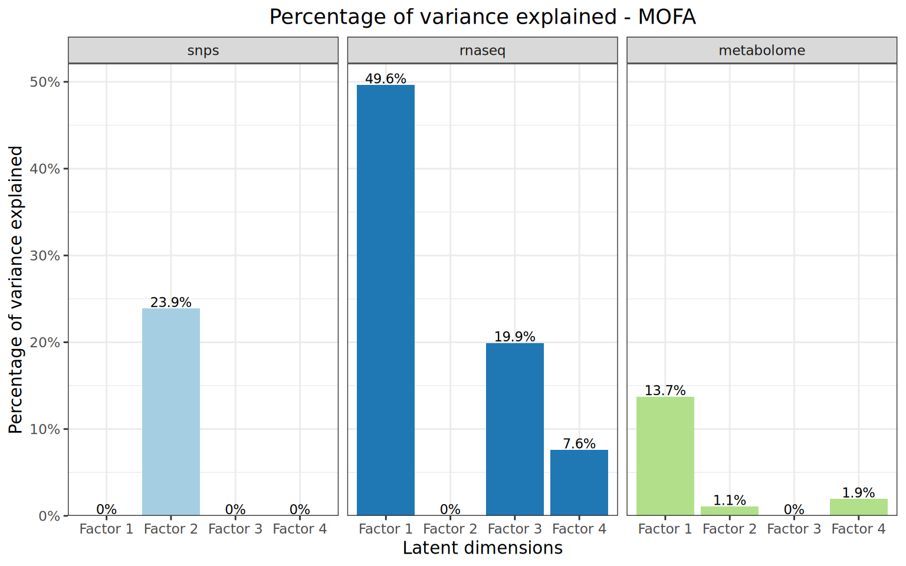
- Sample scores as pairwise scatterplots:
Code
plot_samples_score(
mofa_output, # MOFA standardised output
latent_dimensions = paste("Factor", 1:3), # MOFA factors to display
mo_data = mo_set, # MultiDataSet object
colour_upper = "status", # Sample covariate
scale_colour_upper = scale_colour_brewer(palette = "Set1"), # Custom palette
shape_upper = "gender", # Sample covariate
colour_lower = "geno_comp_cluster" # Sample covariate
) +
theme(legend.box = "vertical")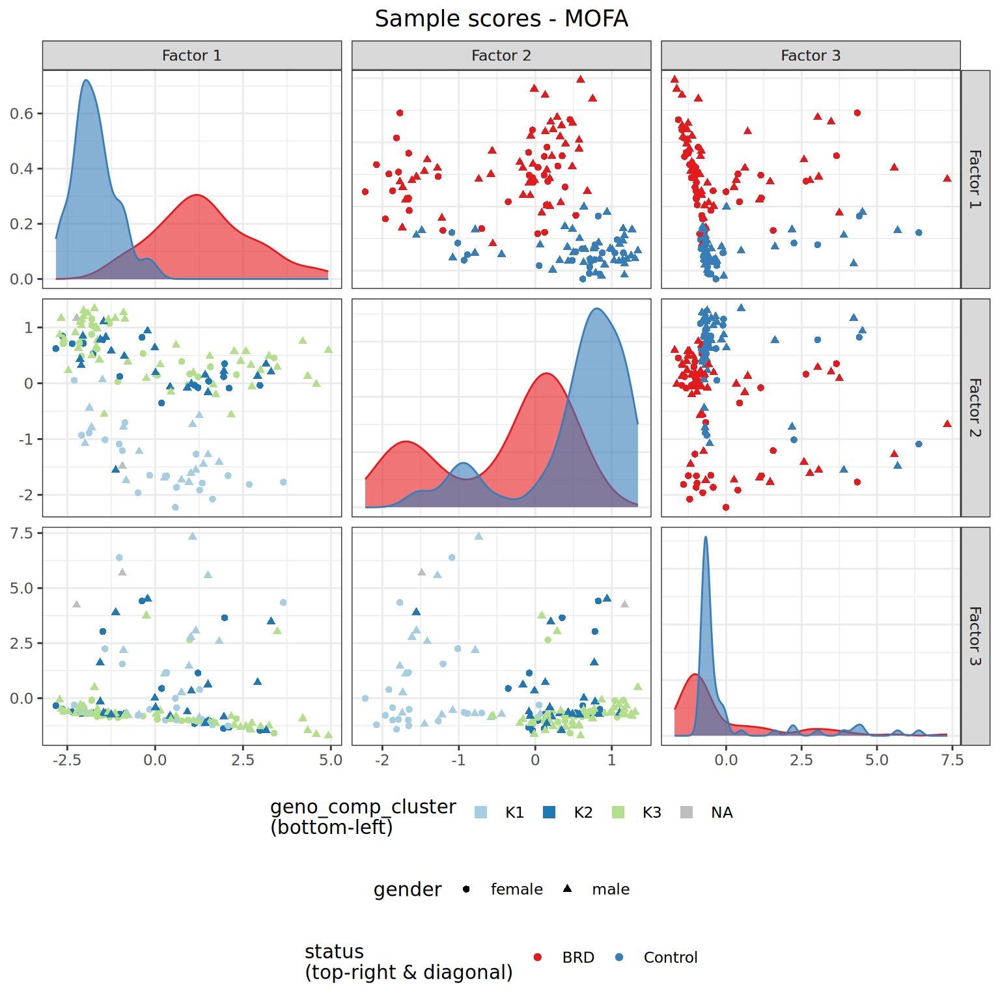
- Sample scores against a sample covariate of interest (either categorical or continuous):
Code
plot_samples_score_covariate(
mofa_output, # MOFA standardised output
mo_set, # MultiDataSet object
"status", # Sample covariate of interest
colour_by = "status", # Other sample covariate
shape_by = "geno_comp_cluster", # Other sample covariate
latent_dimensions = paste("Factor", 1:2) # MOFA factors to display
)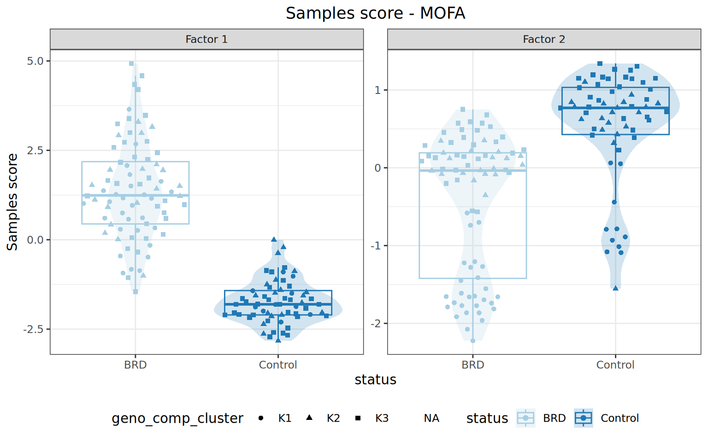
- Top contributing features with their importance:
Code
plot_top_features(
mofa_output, # MOFA standardised output
mo_data = mo_set, # MultiDataSet object
label_cols = list( # Custom labels for features from
"rnaseq" = "Name", # features metadata
"metabolome" = "name"
),
truncate = 25, # truncate long feature labels
latent_dimensions = paste("Factor", 1:2) # MOFA factors to display
)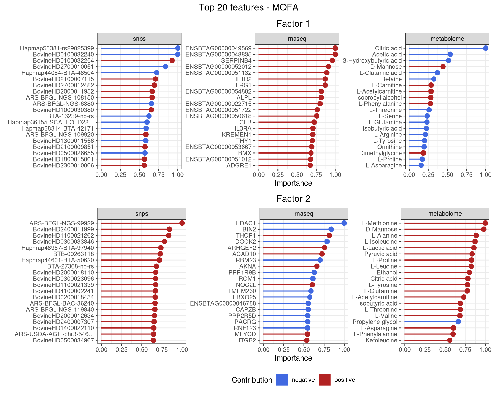
More details can be found in Chapter 12.
1.6 Evaluating the integration results
With moiraine, it is possible to evaluate the results of a given integration tool against prior information that we have about the features (e.g. knowledge about biological functions or results from a single-omics analysis) or samples (e.g. to assess the success of samples clustering into meaningful groups). For example, we can compare the feature selection performed by DIABLO to results from differential expression analyses performed on the omics datasets:
Code
evaluate_feature_selection_table(
diablo_output, # DIABLO standardised output
mo_data = mo_set, # MultiDataSet object
col_names = list( # Columns from features metadata
"rnaseq" = "de_signif", # containing DE outcome
"metabolome" = "de_signif"
),
latent_dimensions = "Component 1" # Latent component to focus on
)#> # A tibble: 4 × 6
#> method latent_dimension dataset feature_label selected not_selected
#> <chr> <fct> <fct> <chr> <int> <int>
#> 1 DIABLO Component 1 rnaseq DE 23 52
#> 2 DIABLO Component 1 rnaseq Not DE 7 912
#> 3 DIABLO Component 1 metabolome DE 10 20
#> 4 DIABLO Component 1 metabolome Not DE NA 25In addition, a number of functions are provided to help with features set enrichment (such as over-representation analysis or gene set enrichment analysis), e.g. by generating feature sets from features metadata through make_feature_sets_from_fm(), or by ensuring that a proper background set is used in the enrichment analysis, with reduce_feature_sets_data(). Information about evaluation of integration results is presented in Chapter 13.
1.7 Comparison different integration results
Lastly, moiraine facilitates the comparison of the results from different integration methods, or from a same integration method but with different pre-processing options or parameter choices. It is possible to visualise the correlation between the results of different methods, in terms of the latent dimensions they constructed:
Code
comparison_heatmap_corr(
output_list, # List of integration results (standardised format)
)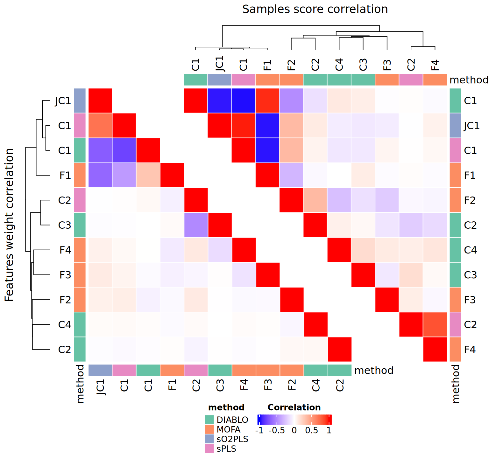
Or compare the samples score or features weight from two latent dimensions created by two integration methods:
Code
plot_features_weight_pair(
list(mofa_output, diablo_output), # Integration results (stand. format)
list( # Latent dimensions to compare
"MOFA" = "Factor 1",
"DIABLO" = "Component 1"
),
mo_data = mo_set, # MultiDataSet object
features_metric = "importance", # Plot absolute or signed importance score
label_cols = list( # Columns from features metadata to use
"rnaseq" = "Name", # as labels in plot
"metabolome" = "name"
)
)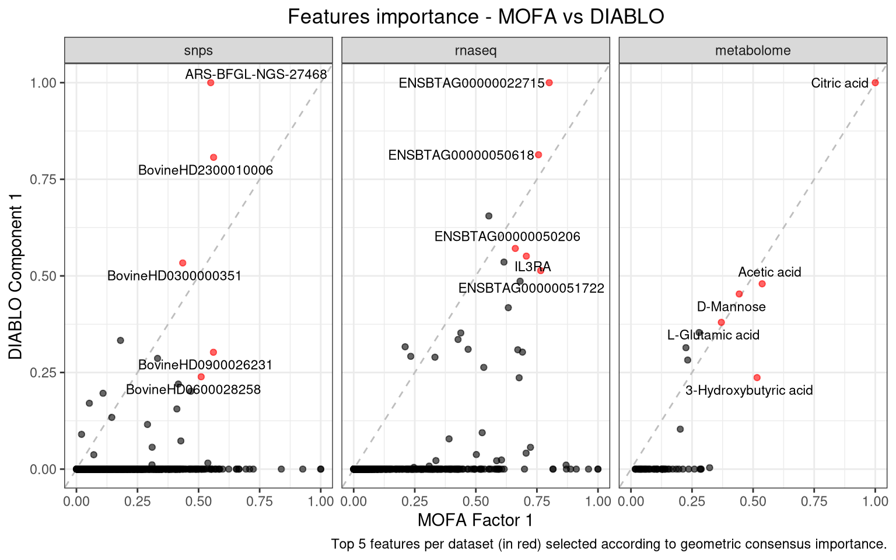
It is also possible to compute a consensus importance score for each feature, which summarises the contribution of the feature to different latent dimensions, and thus assess which features are highlighted across several integration methods. More details are provided in Chapter 14.